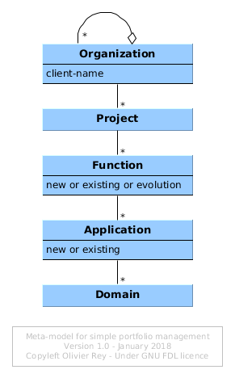

A Simple Meta-Model for Portfolio Management#
Image courtesy of freedigitalphotos.net.
One of the main problems of companies is to manage many IT projects at the same time. Most often, the companies facing this problem are managing project portfolios.
The main drawback of managing several projects in parallel is that is is not easy to:
- Understand the dependencies of the various projects together, and so the order in which they should be led;
- Identify and deal with the various scope overlaps between the various projects;
- Manage the relationship with the business people that want the various projects to happen.
This article presents a very simple method to use to address all those points. We will present the original version of the meta-model. An Archimate version of this model will be presented in another article.
This method mostly targets enterprise or IT architects, program managers or project portfolio managers. Due to its simplicity, many other profiles can use it.
Meta-Model Presentation#
The first objective is to formalize the client of the IT project. Each organization has several departments in which we have several different customers.
Our first artifact type will be Organization. We will assume that every organization can include several other organizations. Each organization will also have a customer name as an attribute.
When the projects intentions are declared, the materials that are produced by the various customers inside the same organization will generally be a list of many projects, with a project name and a more or less developed functional description.
We will define two artifact types to model that:
Projectto model the project,Functionto model the functionality.
In the existing IT systems, we have applications. With the projects to come, some of the current application will get new functions, some new applications will be created and some other will be decommissioned.
We need one more artifact type: Application that models the application; if the application is new, we need a way to tag it as "new" or "existing".
The Function artifact type will be used to attach functionality to Applications. For this purpose, we need an attribute on the Function that indicates if the function is already existing, if it is new or if it must evolve.
As applications are part of a big part of the IT systems (for instance the financial systems), we will attach the application to an application domain; we will use the Domain artifact type for that purpose.
In terms of relationships, we have the following semantics:
- An
Organizationcan contain otherOrganizations; - An
Organizationwill be the customer of severalProjects; Projects are aggregatingFunctions;Applications are attached toDomains andFunctions are attached to them.
The resulting meta-model is presented on the following figure.

Methodology#
Let's suppose we use this model during the budgeting process that usually happens once a year in companies. Budget time is often the time for difficult choices.
The following method is easy to use, can neutralize affects and help the top level management to choose between projects and to create a feasible roadmap within the limits of a feasible budget.
Step 1: Accept All Project Requests and Identify Functions#
The first step is consisting in gathering all projects intentions from all organizations.
We will analyze organization per organization. For each customer within a particular organization, the project intentions are gathered.
The objective is to get the best functional description of the requirements possible and to identify the required functions. Very often, the requirements are a list of features (warning: some of them may already have been implemented without the customer to know about it).
In that phase, the customer must not be challenged, but the architect should try his best to understand the functional (and non functional) requirements. To do that, it can be necessary to distinguish between the solution imagined by the customer and the original requirement.
As the model is simple, the requirement artifact does not exist in this version. The identification of the required Functions will conclude this phase.
Once this phase is complete, we can promise the customer to:
- Analyze his requirements along with all other requirements and projects and do our best to develop what is required;
- Provide a detailed feedback on the demands when all demands have been captured.
Step 2: Identify Common Functions to Highlight Dependencies#
Several customers could have defined different projects that are using the same subset of functions. Identifying those functions is very important, this for several reasons:
- To avoid several projects to develop several times the same function, or worse, variations of the same function;
-
To identify in what projects this function can be required and to scope it carefully;
- Developing a reusable function will ease the success of many projects whereas not developing it may cause project delays or failure;
-
To add this function early in the roadmap;
-
To take a special care to carefully place this function at the proper spot in the rest of the IT systems (step 3);
- Indeed, a misplaced function will generate many useless client/server calls, will generate consistency problems and will generate more integration and QA works: Economically, function placement is crucial.
Functions, once identified, should be assigned with a number characterizing the number of projects that require them. The highest number will lead the global roadmapping exercise. We will call this number the dependency number.
Step 3: Associate Functions to Applications#
This is a back office step that will be done between IT people, most of the time by architects. It is time to review the main functions of the existing applications to be accurate in the exercise.
Functions will be classified into 3 categories:
- Existing functions: We can plan to go back to the customer to assess if we missed something in the original requirement and if the existing function should not evolve.
- New functions that can be naturally attached to an existing application: Some of the functions will naturally find their place as an evolution of an existing application;
- New functions that don't seem to be a natural evolution of the existing applications: However, some new functions have to be studied in order to determine their best spot in the IT systems (or their "less worst" spot).
The two last steps can give birth to more advanced architecture studies. Covering this topic is not in the scope of this article, but we can insist on leading careful analysis, because function misplacement is a problem that will cause painful and costly problems for years if not for decades.
All the functions that are not in existing applications should be gathered and analyzed as a whole to determine the opportunity of developing new applications.
Step 4: Analyze the Roadmap of Each Application, Size it Roughly and Compare With The Skills Available#
Once all functions were assigned to applications, we can size them roughly and have a view of the roadmap of each application. For sure, this roadmap is still theoretical and the pure consequence of the customer's requirements.
The Case of Application Maintenance and Evolution#
All functions of an existing application can be prioritized in the best order of feasibility to create a first credible application roadmap, that is compliant with technical constraints.
At this stage, we can also identify the functions that are nice to have compared to the ones that are must haves. This classification, even if it can be debated with the business may lead to some negotiation margins during the year to come.
The skills available for each application is important because it will determine the real feasibility of the roadmap per application: We mean IT skills (project manager, product owner, developer, QA) but also business skills.
Indeed, in that phase, we can identify the bottlenecks in terms of IT people, when not enough people are skilled to develop the expected application roadmap. Depending on the global priorities of the company, it is possible in that phase to plan people transfer, trainings or recruitments.
The Case of New Applications#
Those projects are always more risky than the previous ones.
In some cases, it is obvious for the customer that the new requirements will lead to a new application. In some other cases, it is not. Those cases must be dealt with carefully because the customer may argue that the new requirements are part of an existing application. In those cases, the objective is to avoid function misplacement.
However, it is more difficult to create a new application:
- The project manager has to be found, and she/he has to be able to lead from-scratch projects;
- The team has to be found, or in the existing people (staff or consultants), or in new comers;
- The business expert(s) has to be named.
Some business people may be a bit worried about the application creation projects because they cause HR troubles and they can face more delays or failures than evolution projects.
End of the Phase#
At the end of the step 4, we should have:
- All functions identified;
- All application roadmap sized;
- All HR requirements.
Step 5: Introduction of Dependencies to Create Project Visions#
To determine which projects to do first in the project portfolio, we need to take the reusable functions with the highest dependency number, in order to schedule them first.
Then, the purpose is to play with the constraints to determine the less worst global path considering:
- The list of projects to develop;
- The skills available;
- The potential HR adjustments (people moving from one project to another, new people).
Generally, the functions with the highest dependency number will drive the roadmap. That means that a function will be develop if and only if it is in the same project than a function with a high dependency number. That means also that generally a lot of new functions required by the business will not be able to be developed in the coming year, just because they are not part of an "important" project.
Indeed, this method enables to show to the top level management what is important to the company throughout the functions that are required by many projects (i.e. that have the highest dependency numbers).
Once everything is done, the exercise can be redone if the budget is bigger or lower in some parts.
Limits of the Method#
We can argue that the functions with the highest dependency numbers may not be the most crucial functions. That can be true.
We can use some tricks in using several levels of functions if needed. Indeed, a function (level 1) required by a certain project could be divided into 3 functions of a smaller granularity (level 2). The level 2 functions could be the functions implemented by the applications. With this model adjustment, we can have a high level view of the function with "project functions" (level 1) and an IT view of functions (level 2).
The artifact type Function must then be able to aggregate a list of Functions. We let the reader update the meta-model.
What Tools Can Help?#
Yed#
When this method was used for the first time, Yed was the tool used. A Yed model was realized per organization.
The advantage of Yed is its simplicity and its powerful set of graph layout algorithms. The drawback of Yed is when the number of projects is big (we had to deal with the Digital Division and their 130 projects), the model is hardly usable.
EMF and Sirius#
Indeed, when the number of projects is high, a multiple view design tool is required. A possible option is to create and EMF model and to create the edition views with Sirius. You can also use MetaEdit+ that is a powerful metamodeler.
Roadmapping With Archimate#
Archimate is probably the best language to realize this kind of portfolio management. We will explain in a bit more details a possible use of Archimate enterprise architecture modeling language for portfolio roadmapping in another article.
Conclusion#
With this meta-model, it is possible to create and operate a feasible, logic and auditable project portfolio and to have explanations about the constraints and the process of deciding what project should be done in priority.
Most often, this kind of tools pacifies the battleground.
Even if projects can go wrong during the year to come, with this method, many problems will have been anticipated and will, as per magic, not occur during the year.
(January 2018)